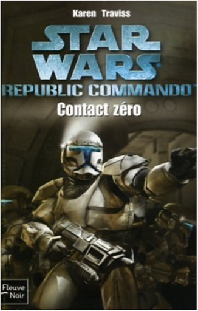

Books
Movies
Albums
Videogames
Games
BD
BD Camille
Blu-ray
Business
Camille
Comics
Cooking
Lego
Manga
Pauline
Photography
Star Wars
T'choupi
Travel
TV Shows
Un livre dont vous êtes le héro
Vinyl
Walt Disney
3
4
5
6
7
star wars, tome 61 : le nouvel ordre jedi, partie 10, la voie du destin
walter jon williams
star wars, tome 62 : le nouvel ordre jedi, partie 11, l'hérétique de la force, partie 1, les vestiges de l'empire
sean williams, shane dix
star wars, tome 63 : le nouvel ordre jedi, partie 11, l'hérétique de la force, partie 2, les réfugiés
sean williams, shane dix
4
star wars, tome 64 : le nouvel ordre jedi, partie 11, l'hérétique de la force, partie 3, réunion
sean williams, shane dix
star wars, tome 65 : le nouvel ordre jedi, partie 12, l'ultime prophétie
greg keyes
3
star wars, tome 66 : les aventures de yan solo, partie 1, yan solo au bagne des étoiles
brian daley
4
star wars, tome 67 : les aventures de yan solo, partie 2, la revanche de yan solo
brian daley
4
star wars, tome 68 : épisode III, la revanche des sith
matthew stover
4
star wars, tome 69 : les aventures de yan solo, partie 3, yan solo et le trésor de xim
brian daley

star wars, tome 73 : contact zéro
karen traviss
5
star wars, tome 75 : le nouvel ordre jedi, partie 13, la force unifiée
james luceno
5
star wars, tome 82 : triple zéro
karen traviss
3
3
4
5
6
7


 Made with Delicious Library Made with Delicious Library
Made with Delicious Library Made with Delicious Library